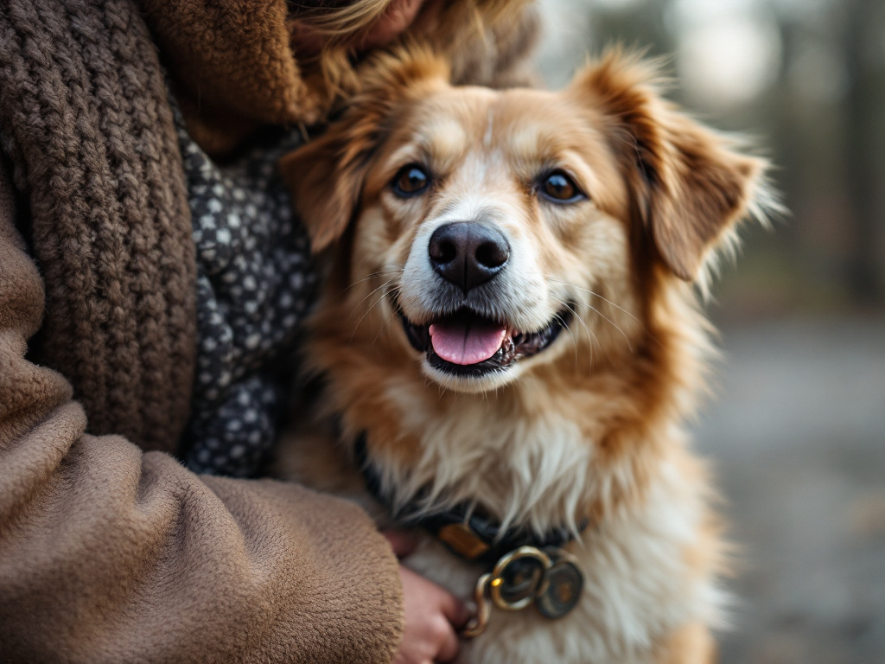

Author Name
Date
Top 5 Grooming Tips for Cats and Dogs
Grooming plays a crucial role in keeping your furry friends healthy and happy. Regular grooming sessions not only keep your pets looking their best but also contribute to their overall well-being. If you're a pet owner looking to ensure your cats and dogs are well-groomed, here are the top 5 grooming tips to help you out.